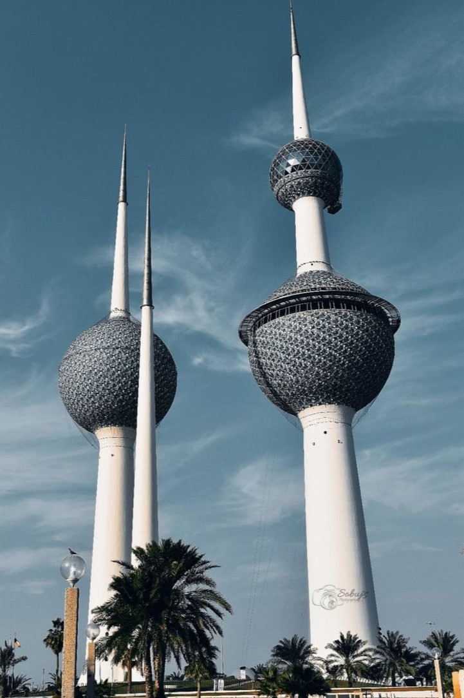
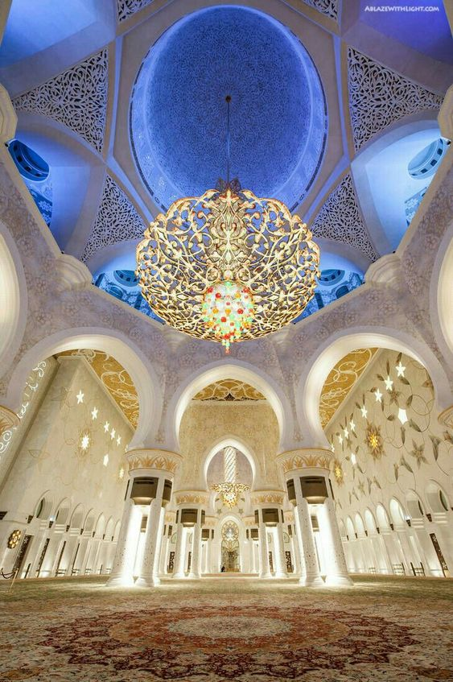
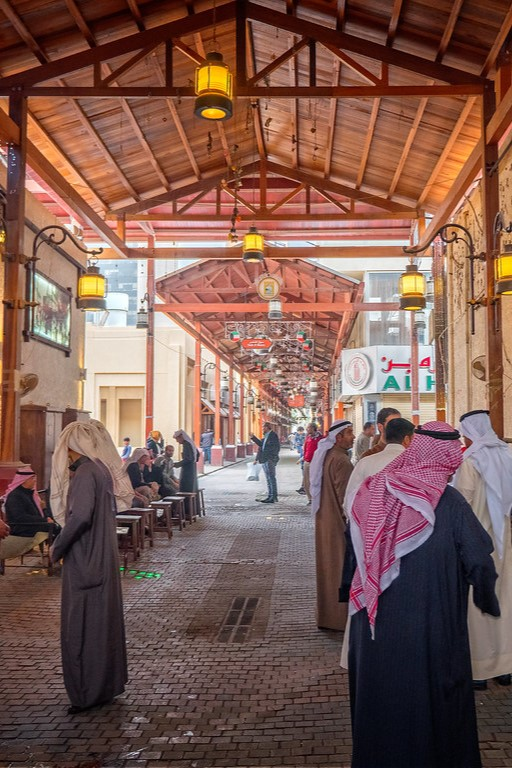

Kuwaiti Landmarks
“One learns from the past and learns about it for the future.”
Kuwaiti Towers
Grand Mosque of Kuwait
Al-Mubarakiya
Get to know Kuwait
“One learns from the past and learns about it for the future.”
Explore Kuwait City
Discover Kuwait City, with its modern skyline, markets, and landmarks. Visit Kuwait Towers, an iconic symbol, and the Grand Mosque. Enjoy the Arabian Gulf Road's beaches, parks, and the Liberation Tower.
Visit Cultural Sites
Uncover Kuwait's heritage at the National Museum, displaying history, culture, and art. Experience traditional Bedouin crafts at Sadu House. Immerse yourself in the bustling Kuwait Souq for spices, textiles, handicrafts, and local cuisine.
Explore Kuwait's Natural Beauty
Discover ancient ruins on Failaka Island. Relax on the pristine Al Kout Beach. Experience the desert's mesmerizing beauty with a safari or sunset view. Kuwait surprises with a blend of modernity and natural splendor.
Experience Kuwaiti Cuisine
elight in Kuwaiti cuisine, a fusion of Arab flavors and influences. Taste Machboos, spiced rice with meat or seafood. Sample grilled fish, kebabs, and savor traditional Arabic coffee called "gahwa." Embrace warm Kuwaiti hospitality at local restaurants and Machboubs.
What some of our vistors say
Discover the authentic impressions of our esteemed visitors through a curated collection of reviews showcasing their firsthand experiences in our country

Kuwait is a hidden treasure with friendly locals, stunning architecture, and delicious cuisine. The blend of tradition and modernity is awe-inspiring, and the pristine beaches offer a serene retreat. A must-visit for anyone seeking a unique Middle Eastern experience.
Dzevad Bilisevic
Kuwait is a hidden treasure with friendly locals, stunning architecture, and delicious cuisine. The blend of tradition and modernity is awe-inspiring, and the pristine beaches offer a serene retreat. A must-visit for anyone seeking a unique Middle Eastern experience. (Farsi)
Dozo Bilal
Interested? Why not come and visit
Contact UsMade by Topalovic Tarik ©